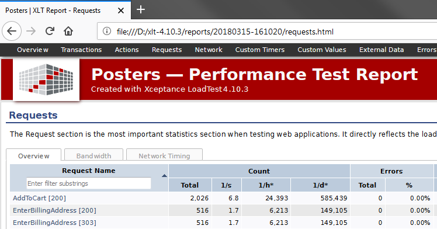
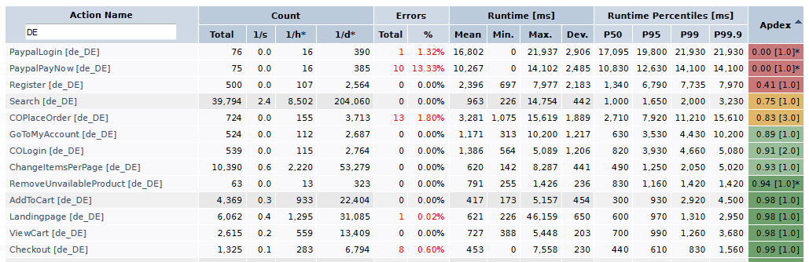
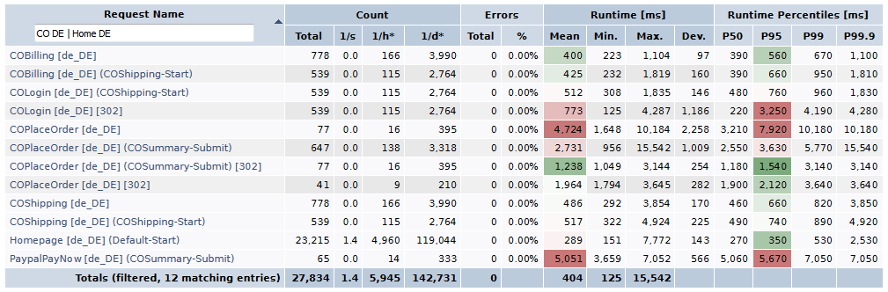
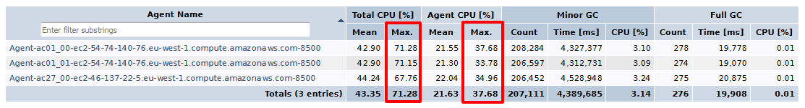

XLT 4.10.4
Framework
Simulation of keyboard/mouse actions on invisible elements (#3108)
XLT’s Scripting API simulates keyboard and mouse actions for invisible elements by dispatching keyboard/mouse events.
Since DOM Level 3, such keyboard and mouse events should be created using the corresponding constructor functions instead of document.createEvent('KeyEvents') and document.createEvent('MouseEvents'). Some modern browsers removed the legacy API functionality. XLT was adjusted accordingly.
Typing into invisible elements (#3110)
In contrast to the plain WebDriver API, XLT’s Scripting API enables you type into elements that are not visible (not shown at all or overlaid by other elements). Because the target element could contain some text already, the element was cleared first.
Unfortunately, some modern browsers don’t support this operation for invisible elements anymore. Therefore an element’s content is now only cleared only when the target element of type input or textarea is displayed and editable.
XLT 4.10.3
Load Testing
New AWS data center in Paris (#3060)
Recently, Amazon opened a new data center in Paris, France (eu-west-3). This data center is now supported in ec2_admin.
Display project name in test reports (#3057)
If you are busy with different load testing projects at the same time, you might also have different test reports open in the browser. Since they all look alike, it happens too easily that you look at the wrong report by mistake. That’s why you can now name your project. If a project name is set, this name will be rendered prominently into the header of each report page (and also the page title).

Here is how you would specify the project name in the settings of your project, typically in file config/project.properties:
com.xceptance.xlt.projectName = PostersComplex Requests page may cause the browser to become unresponsive (#3039)
Opening the Requests page of the performance test report in a browser might cause the browser to become laggy or even unresponsive for a while, in particular if the requests table contains many entries and, hence, there are N times as many charts on the page. This was because the browser tried to load all chart images up-front, even those that are currently not visible (e.g. the ones used only when printing the page). This has been tuned such that invisible chart images are loaded only when they become visible.
However, when printing the page, all images have to be loaded up-front or otherwise they would be missing in the printout. As long as the page is still busy loading the charts, a message box will tell you that. In this case, close the message box, cancel the print dialog that appears right after, and try printing the page once again after a little while.
Report generator option ‘noRampUp’ should ignore scenarios without ramp-up (#3058)
The performance report generator provides the option -noRampUp to simplify excluding the ramp-up phase from the performance report. The ramp-up phase ends when all scenarios with a ramp-up period defined have reached the end of their ramp-up period. However, even scenarios without ramp-up, but with an initial delay, were considered when calculating the end of the ramp-up phase, leading to unexpected results. Fixed.
Framework
Incorrect encoding of ‘%’ characters in a URL (#3054)
In case a URL contains multiple ‘%’ characters in a row (such as in “abc%%xyz”), HtmlUnit did not properly encode them. Fixed.
Browser extension does not always report data (#3056)
When using XltChromeDriver or XltFirefoxDriver, a special extension will be installed into the browser to report request/response details and timings to XLT. However, under rare circumstances the extension did not connect to XLT, so the data collected in the browser was lost. Fixed now.
XLT 4.10.2
Framework
Convenient access to the value of a variable or test data item (#3032)
In case you need to access the value of a dynamic variable or test data item in your Java-based script test cases, you can now use the new method resolveKey(String) where you just need to pass the name of the variable, or test data item respectively, without the surrounding ${...}:
String itemCount = resolveKey("itemCount");Request information missing for the last action (#3037)
XLT can be used in combination with the XLT Multi-Browser Extension to run the same test case multiple times, once for each of the annotated target browsers. When using Chrome or Firefox with XLT’s measurement add-on installed (i.e. chrome_clientperformance or firefox_clientperformance) as one of the target browsers, you will also get detailed request and response information. However, although that data was recorded correctly, the information for the last action in the test case was missing in the result browser. Fixed now.
Exception when taking the final screenshot (#3029)
In case your Java-based script test case has a method annotated with @After that starts at least one action, XLT failed to take the screenshot for the very last action as the underlying WebDriver instance was closed already:
Failed to create screenshot
org.openqa.selenium.NoSuchSessionException: Session ID is null. Using WebDriver after calling quit()?XLT 4.10.1
License Update
As you may have already heard, XLT is free of charge for load and performance testing starting January 1, 2018. See our blog post for all the details. Note that we updated the XLT license agreement accordingly. Please read and accept the new license terms before using XLT.
XLT 4.10.0
Release Overview
XLT 4.10.0 is the first release after our decision to discontinue Script Developer. Since the export of XML script test cases to Java-based script test cases is the designated migration path, we have put some effort into the XLT framework to extend the Java scripting API and to strengthen the support for Java script test cases in general. For instance, the framework can now create and handle the underlying Web driver for you and will also take care of resolving placeholders in locator expressions or other parameters. The scripting API has been extended by some new script commands (or rather: methods) to facilitate writing Java-based script test cases. All script commands are now also available as a static version that can be called from any class giving you more freedom when designing your test suite. Also Script Developer provides an alternative export template that makes use of all these new features and can, therefore, produce more compact Java code.
The load test report comes with some improvements as well. For each action the report now lists the Application Performance Index (Apdex), a standardized metric to express user satisfaction when interacting with an application. Many values in the Requests table can now be colored according to your criteria to quickly direct your attention to problematic requests.
But there is more. As usual for a major release, all core libraries have been updated. This includes Selenium for the latest browser support and HtmlUnit for an improved browser emulation. We also have improved our XLT plugin for Jenkins. You can now use it in Jenkins build pipelines directly.
Continue reading to learn more.
Script Developer
End of development
As you may have heard already, Firefox 57 does no longer support XUL/XPCOM-based browser extensions (a.k.a. legacy extensions) in favor of extensions built upon the WebExtension API. As a consequence, Script Developer won’t install or work in Firefox 57 and above. Unfortunately, porting Script Developer to the WebExtension API cannot recreate the same user experience and functionality. Furthermore, user feedback has shown that the possibilities of XML script test cases are often too limited for today’s test automation needs. Therefore, Xceptance recently decided to discontinue the development of Script Developer. See our announcement for how we have come to this decision and which possibilities you have now.
Please note this does not mean that Script Developer is completely dead from now on. You may continue to use Script Developer safely using Firefox 52/ESR for another six months, or even beyond if you take the risk using a Firefox version that is out of maintenance. We will continue to ship Script Developer together with XLT and may even release maintenance updates if necessary, but don’t expect new features.
There is plenty of time for you to plan the migration of your script test suites. Recommended migration path is to export your XML script test cases to Java test cases using the export functionality built into Script Developer.
Supported Firefox versions
Script developer runs on Firefox 45/ESR up to Firefox 56. We recommend using Firefox 52/ESR. Firefox 57 and later versions are not and will never be supported.
Update Instructions: Firefox won’t auto-update older versions of Script Developer to 4.10.0. You will need to do this manually. Please remove the currently installed version first and install the new version afterwards by simply dragging and dropping the file <xlt>/tools/xlt-scriptdeveloper-4.10.0.xpi onto Firefox. Auto-updating within the 4.10.x product line will then work as usual again.
Alternatively, you can visit the Mozilla Add-On marketplace to install Script Developer. Please make sure to uninstall any locally installed version first.
Enhanced export templates
Since exporting your XML script test cases to Java is the designated migration path to keep all your test cases and be able to maintain them without Script Developer, we have put some effort into the export functionality in Script Developer.
Module export as static methods – We added another export template ‘XLT Scripting API – Compact’ to Script Developer, which exports modules as static methods instead of module classes. This export variant produces slightly more compact code which is also better suited for refactoring, for instance, towards a page concept. However, test data defined at script modules are not supported when using this variant.
See below for further improvements in the area of Java-based test cases using the Scripting API.
Framework
Improvements for Java-based script test cases
No need to pass a driver – Previously, test cases extending AbstractWebDriverScriptTestCase had to pass a pre-configured Web driver instance to its super class. Now you may pass also null for the driver or even omit this argument altogether, in which case XLT will create and manage the driver for you. The type of the driver to be created can be configured using the xlt.webDriver properties which you already know from the wrapper classes for your XML script test cases.
Additional methods – To ease writing Java-based script test cases, there are some new methods in the scripting API. To simplify access to certain values (replaces storeXXX(...) / resolve(...) pairs), you would now use:
- evaluate(jsExpression)
- getAttribute(attributeLocator)
- getElementCount(elementLocator)
- getText(elementLocator)
- getTitle()
- getValue(elementLocator)
- getXpathCount(xpath)
To simplify writing conditions in test cases with conditional branches:
- isChecked(elementLocator)
- isElementPresent(elementLocator)
- isEnabled(elementLocator)
- isVisible(elementLocator)
To bridge the scripting and WebDriver worlds:
- findElement(elementLocator)
- findElements(elementLocator)
resolve(…) no longer needed – Previously, any ${...} placeholder (test data item or dynamic variable) had to be resolved to its actual value via resolve("${...}") in your test code. This step is now performed implicitly by the XLT framework when executing commands or standard script modules. To fully support this, some commands now provide an overloaded version that also takes a placeholder expression as parameter, for instance assertElementCount("css=div", "${expectedCount}").
Script commands callable from any class – Previously, script commands were only available to test case classes or script module classes as their super class provided them. You can now structure your reusable test code into methods instead of module classes since, all scripting commands are now also available as static methods in class StaticScriptCommands that can be called from anywhere, for instance, from your page classes:
import static com.xceptance.xlt.api.engine.scripting.StaticScriptCommands.*;public class HomePage { public static void validate() { assertElementPresent("id=primary"); assertElementPresent("css=.header .header-nav-strip"); assertElementPresent("css=.footer div.footer-benefits"); }public static void search(String searchTerm) { startAction("Search"); typeAndWait("id=q", searchTerm) }... }
Just make sure your test cases still extend AbstractWebDriverScriptTestCase as this super class initializes the scripting engine.
Selenium
Selenium has been updated to latest version 3.8.1. Make sure you also update the driver binaries for the browsers you want to use in your test cases. See below for a list of links to download the driver binary for your browser:
- Chrome/Chromium: chromedriver
- Edge: MicrosoftWebDriver.exe
- Firefox: geckodriver
- Internet Explorer: IEDriverServer.exe
- Opera: operadriver
- PhantomJS: phantomjs
Unfortunately, geckodriver is not complete yet and still has bugs. If you encounter issues, you might try running FirefoxDriver in legacy mode. In this mode, a special Selenium extension will be installed into Firefox that takes over the role of geckodriver.
To switch between geckodriver mode and legacy mode, change the following setting in the test suite configuration as needed:
xlt.webDriver.firefox.legacyMode = true
xlt.webDriver.firefox_clientperformance.legacyMode = trueIf you prefer to programmatically create your FirefoxDriver (or XltFirefoxDriver) instances yourself, use the following code:
FirefoxOptions options = new FirefoxOptions().setLegacy(true);
FirefoxDriver driver = new FirefoxDriver(options);Note that the legacy mode does not work with newer Firefox versions, while the latest Geckodriver might not work with older Firefox versions. So as a rule of thumb, use Firefox 52/ESR if you intend to use legacy mode and latest Geckodriver/Firefox for geckodriver mode.
Miscellaneous
XltFirefoxDriver / XltChromeDriver reusable – The XLT framework can be configured to reuse a Web driver instance for multiple test cases (see property xlt.webDriver.reuseDriver) saving the overhead of starting the browser again and again for each test case invocation. This feature is now supported also for XltChromeDriver / chrome_clientperformance and XltFirefoxDriver / firefox_clientperformance.
Reuse Web drivers per thread – Now the framework maintains not just a global Web driver instance but a separate one for each thread when reusing Web drivers. This allows to reuse drivers also when executing test cases in parallel (in functional tests or load tests).
Simplify opening the result browser after a test run – When running a test case from within your IDE, XLT now prints the path to the corresponding result browser to the console for easy copy&paste into a Web browser. XLT may even open the result browser directly in your default Web browser. To this end, set the following property in your dev.properties file:
com.xceptance.xlt.results.openResultBrowser = trueLoad Testing
Load Test Report
Apdex – The load test report now lists the Apdex for each action.
Apdex (Application Performance Index) is an open standard developed by an alliance of companies. It defines a standard method for reporting and comparing the performance of software applications in computing. Its purpose is to convert measurements into insights about user satisfaction, by specifying a uniform way to analyze and report on the degree to which measured performance meets user expectations.
In short, the Apdex calculation for an action is based on a single threshold value that denotes the boundary between satisfying and (more or less) unsatisfying action runtimes. From the number of actions that are either satisfying or unsatisfying, a metric is derived that expresses the achieved user satisfaction as a normalized value in the range [0.0, 1.0]. The Apdex specification also defines a rating of the achieved value, ranging from ‘Excellent’ to ‘Unacceptable’. Since Apdex values are normalized, they can be compared and sorted easily even if their underlying threshold is different. For more information see the Apdex specification.
See below for an example that shows the achieved Apdex for different actions for which thresholds of 1.0, 2.0, or 3.0 seconds were defined. When sorting by the Apdex (or just looking at the colored table cells), problematic actions can be identified easily:

The Apdex threshold is configurable per action, but you can also group actions by name (via regular expressions) for less configuration effort. Apdex thresholds can be defined either globally in <xlt>/config/reportgenerator.properties or in your test suite settings, e.g. in <test-suite>/config/project.properties. See below for an example:
## The threshold for all checkout-related actions. com.xceptance.xlt.reportgenerator.apdex.Checkout.actions = CO(Login|Billing|Shipping).* com.xceptance.xlt.reportgenerator.apdex.Checkout.threshold = 2.0## The threshold for order placement. com.xceptance.xlt.reportgenerator.apdex.PlaceOrder.actions = COPlaceOrder com.xceptance.xlt.reportgenerator.apdex.PlaceOrder.threshold = 3.0## The threshold for all other actions. com.xceptance.xlt.reportgenerator.apdex.default.threshold = 1.0
Colored request table cells – The amount of data shown in the data tables can sometimes be overwhelming and hard to evaluate. This is especially true for the Requests table. However, if you have already defined some acceptance criteria for certain types of requests (or you always wanted to do so), then XLT can help focus on requests that violate these criteria by coloring the respective table cells. This way it is much easier to spot problematic requests when skimming through the table.

In contrast to the Apdex for actions, where you get an extra value, you are free to define the coloring for most of the already existing table columns. Currently, this includes mean, minimum, maximum, percentiles, and runtime segmentation values.
Table cells are colored based on a certain target value and a lower and upper boundary. If the actual value exceeds the target, the cell will gradually turn more red, and if it goes below the target, the report will reward you with a greenish background. When the value reaches the lower/upper limit, the background color will stay either bright green or red.
The target value and upper and lower boundaries are configurable per request, but, same as for the Apdex, you can also group requests by name (via regular expressions) for less configuration effort and there is also a default rule for all other requests. See below for a sample configuration:
## Use specific colorization rules for the homepage request and overwrite the default group. com.xceptance.xlt.reportgenerator.requests.table.colorization.Checkout.matching = CO(Login|Billing|Shipping).* com.xceptance.xlt.reportgenerator.requests.table.colorization.Checkout.mean = 250 500 1000 com.xceptance.xlt.reportgenerator.requests.table.colorization.Checkout.percentile.p95.id = 95 com.xceptance.xlt.reportgenerator.requests.table.colorization.Checkout.percentile.p95 = 375 750 1500## Use specific colorization rules for the homepage request and overwrite the default group. com.xceptance.xlt.reportgenerator.requests.table.colorization.PlaceOrder.matching = COPlaceOrder.* com.xceptance.xlt.reportgenerator.requests.table.colorization.PlaceOrder.mean = 1000 2000 4000 com.xceptance.xlt.reportgenerator.requests.table.colorization.PlaceOrder.percentile.p95.id = 95 com.xceptance.xlt.reportgenerator.requests.table.colorization.PlaceOrder.percentile.p95 = 1500 3000 6000## Use specific colorization rules for the homepage request and overwrite the default group. com.xceptance.xlt.reportgenerator.requests.table.colorization.default.mean = 125 250 500 com.xceptance.xlt.reportgenerator.requests.table.colorization.default.percentile.p95.id = 95 com.xceptance.xlt.reportgenerator.requests.table.colorization.default.percentile.p95 = 250 500 1000
Again, you can configure this either in <xlt>/config/reportgenerator.properties or, alternatively, in your test suite settings, e.g. in <test-suite>/config/project.properties.
If you don’t want to highlight requests that exceed/fall below the target value, simply set the respective boundary equal to the target value. Typically, you would do this for requests outperforming the target value, so you can focus on the red ones.
Drop requests from the report – By default, the load test report always contains all requests. They may have been renamed in various ways via request processing rules (a.k.a. “merge” rules), but you cannot get rid of certain requests altogether. They are still present in the summary statistics/charts.
But there are situations where removing requests is desired. Imagine those spurious socket timeouts spiking high. Once you know they are there, you might wish to ignore them for the rest of the analysis. You can now use a special request processing rule to identify the offending requests and delete them from the report:
## Delete all requests without a valid status code.
com.xceptance.xlt.reportgenerator.requestMergeRules.10.statusCodePattern = 0
com.xceptance.xlt.reportgenerator.requestMergeRules.10.dropOnMatch = trueEvents not grouped by test case – Events shown in the Event Details table are usually grouped by test case. In cases where you don’t need this grouping, you can turn it off now via configuration in <xlt>/config/reportgenerator.properties or, alternatively, in your test suite settings, e.g. in <test-suite>/config/project.properties:
com.xceptance.xlt.reportgenerator.events.groupByTestCase = falsePeak CPU usage across all agents – The data table on the Agents page now lists not only the average CPU usage but also the maximum (smoothed) value encountered. This helps to spot temporary issues on an agent machine more easily.

Omit agent charts – By default, the load test report contains several charts for each and every agent. If you use many agent machines with multiple agents each, the number of charts can grow significantly. If you don’t need these charts, you can turn them off now:
./create_report.sh --noAgentCharts ../results/20171110-110432This will speed up report generation and noticeably reduce the overall size of the report, in case you have to distribute or archive it.
Printer style – The load test report now ships with a special printer style. When printing report pages (or exporting them to PDF for archiving purposes), the pages will still look nice and show all charts now. For best printing results, choose ‘Landscape’ and make sure you print with background colors and background images enabled.
ec2_admin
More instance details – When terminating instances or when showing instance details, ec2_admin prints some key information about each running instance. Now also stopped instances are listed and the amount of data has been extended to include information about the used key pair, security group(s) and machine image.
1 running, 0 pending and 1 stopped instance(s) found.
---------------------------------------------------------------------------------------------------------------------------------
Name | Host | Type | Key-Pair Name | Security Groups | Image | State | Launch Time (UTC) | Uptime (h:mm)
---------------------------------------------------------------------------------------------------------------------------------
foo | <unknown> | c3.2xlarge | kp-eu-west-1 | default | ami-37bb7f58 | stopped | 2017-11-20 11:41 | 7d 23:45
bar | 18.194.188.5 | c4.2xlarge | kp-eu-west-1 | default | XLT 4.9.3 | running | 2017-11-28 10:35 | 00:51
---------------------------------------------------------------------------------------------------------------------------------XLT Jenkins plugin
Pipeline support – Since Jenkins 2.x, build processes can also be modeled as pipeline jobs. The XLT plugin for Jenkins has been enabled to take part in such a pipeline directly, i.e. without the need for a separate job to drive the plugin.
In order to configure a load testing build step for your pipeline, open the pipeline snippet generator via the ‘Pipeline Syntax’ link and choose ‘xlt: Run a load test with XLT’ from the step select box. Fill in the plugin configuration fields as needed and paste the resulting pipeline snippet into your pipeline.
Please note that the XLT plugin runs the load test only. Since your test suite needs to be updated and compiled before it can be used for a load test, make sure you have added the necessary steps to your pipeline. See below for a minimal pipeline that covers all these steps:
node {
stage('Preparation') {
// update workspace
git 'https://github.com/Xceptance/testsuite-nocoding.git'
}
stage('Build') {
// compile the test classes in your test suite
sh 'mvn clean test-compile'
}
stage('Load Test') {
// run the load test
xlt testPropertiesFile: 'test.properties', xltTemplateDir: '/tools/xlt-4.10.0', stepId: 'ca68dd47-f99b-4091-a2e1-b29b9c1ad2d1'
}
}